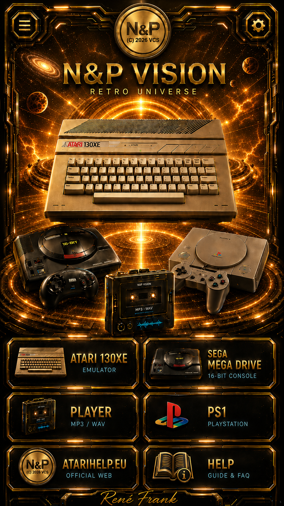

ATARI 130XE otevre Atari emulator modul.
SEGA MEGA DRIVE otevre funkcni Sega modul s ClownMDEmu wrapperem.
PLAYER otevre MP3 / WAV prehravac.
PS1 otevre novou PlayStation obrazovku podle dodane grafiky.
ATARIHELP.EU otevre oficialni web.
Podpis Rene Frank vede na Facebook profil.